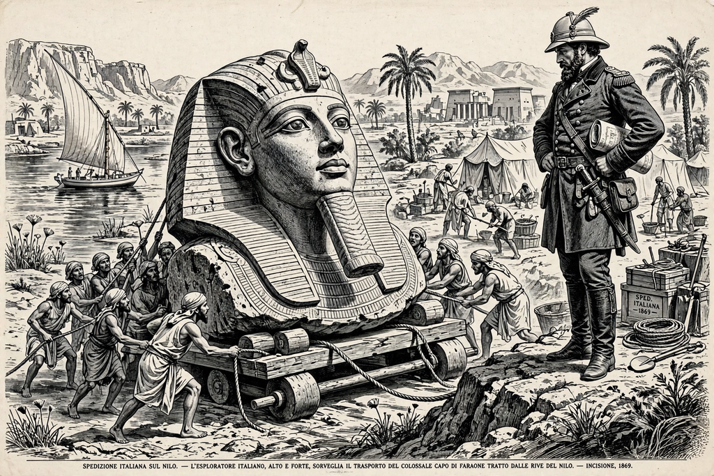

| Giovanni Battista Belzoni | |
|---|---|
| Born | 5 November 1778, Padua, Italy |
| Died | 3 December 1823 (aged 45), Gwato, Benin |
| Nationality | Italian |
| Occupation | Explorer, pioneering Egyptologist |
| Known for | Younger Memnon; clearing Abu Simbel; tomb of Seti I |

Giovanni Battista Belzoni (5 November 1778 – 3 December 1823), sometimes known as The Great Belzoni, was an Italian explorer and pioneer archaeologist of Egyptian antiquities. A former circus strongman of imposing height, he became famous for transporting the colossal bust of Ramesses II to England, clearing the great temple of Abu Simbel, and discovering the magnificent tomb of Seti I in the Valley of the Kings.
Born in Padua to a barber's family, Belzoni studied hydraulics in Rome before Napoleon's invasion disrupted his plans. He moved to England in 1803 and earned a living as a strongman at fairs and Sadler's Wells Theatre, billed as the "Patagonian Samson." In 1815 he travelled to Egypt with a model irrigation pump to offer to the ruler, Muhammad Ali Pasha; when the device failed to impress, he was recruited by the British consul-general Henry Salt to collect antiquities for the British Museum.
In 1816 Belzoni undertook his most famous feat: moving the seven-ton granite head and torso of Ramesses II — the so-called Younger Memnon — from the Ramesseum at Thebes to the Nile and thence to London, using only levers, ropes, rollers and about 130 men. The bust arrived at the British Museum in 1818 and inspired Percy Bysshe Shelley's sonnet "Ozymandias."
In 1817 Belzoni returned to Abu Simbel, first described by Johann Ludwig Burckhardt, and cleared the sand choking the Great Temple, entering it on 1 August 1817. In October of the same year he discovered the tomb of Seti I (KV17) in the Valley of the Kings — still considered the finest tomb in the valley, with superb painted reliefs. In 1818 he opened the pyramid of Khafre at Giza, leaving his name inscribed in the burial chamber, and in 1819 reached the Red Sea port of Berenice and the emerald mines of the Eastern Desert.
Belzoni returned to England and in 1820 published his Narrative of the Operations and Recent Discoveries within the Pyramids, Temples, Tombs, and Excavations, in Egypt and Nubia, a bestseller. His 1821 exhibition of casts and a model of Seti I's tomb at the Egyptian Hall in Piccadilly was a sensation. In 1823 he set out to find the source of the Niger and reach Timbuktu, but died of dysentery at Gwato in Benin on 3 December 1823. Though criticised for rough excavation methods typical of his era, Belzoni is remembered as one of the most colourful and productive of the early Egyptologists.